Tutorial: Authoring
Overview
In this tutorial we’ll show you how to author Quarto documents in RStudio. In particular, we’ll discuss the various document formats you can produce with the same source code and show you how to add components like table of contents, equations, citations, etc. The visual markdown editor in RStudio makes many of these tasks easier so we’ll highlight its use in this tutorial, but note that it’s possible to accomplish these tasks in the source editor as well.
If you would like to follow along step-by-step in your own environment, make sure that you have the latest release of RStudio (v2022.02), which you can download here, installed.
Output Formats
Quarto supports rendering notebooks to dozens of different output formats. By default, the html format is used, but you can specify an alternate format (or formats) within document options.
Format Options
You can choose the format you want to render your Quarto document to at the time of creating your new document. To create a new document, go to File > New File > Quarto Document… Alternatively, use the command palette (accessible via Ctrl+Shift+P), search for Create a new Quarto document and hit return.
In the Title field, give a title for your document (e.g. the screenshot below suggests “Housing Prices”) and add your name to the Author field. Next, you will select the output format for your document. By default, RStudio suggests using HTML as the output, let’s leave that default for now.

A new document will be created with the following YAML.
---
title: "Housing Prices"
author: "Mine Çetinkaya-Rundel"
---Note that our format choice (HTML) is not even reflected in the YAML as it is the default output format for Quarto documents. However you can directly edit the YAML to change the output format, e.g. to PDF (pdf) or MS Word (docx). Add format: pdf to your document’s YAML as shown below.
---
title: "Housing Prices"
author: "Mine Çetinkaya-Rundel"
format: pdf
---Unfortunately, this document has no content, so rendering it would not result in a very interesting out. To make it a bit easier to demonstrate all the features we want to highlight in this tutorial, let’s close this empty document and start with one that has a little bit of content in it. If you would like to follow along step-by-step in your own environment, download the Quarto document (.qmd) below and open it in RStudio.
Then, click on  Render (or use the keyboard shortcut ⇧⌘K). We recommend also checking the box for Render on Save for a live preview of your changes. As shown below, you should see the rendered PDF in the Viewer in RStudio.
Render (or use the keyboard shortcut ⇧⌘K). We recommend also checking the box for Render on Save for a live preview of your changes. As shown below, you should see the rendered PDF in the Viewer in RStudio.
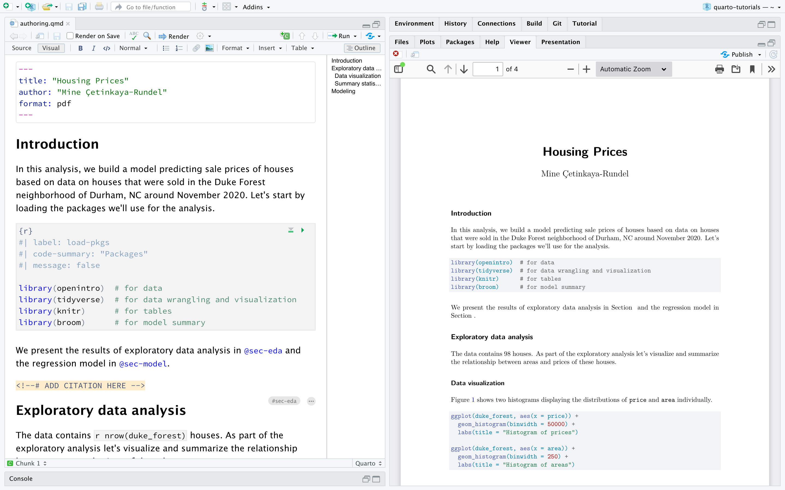
Next, let’s add an option to the YAML, e.g. to add line numbers to the code chunks (code-line-numbers: true). Add this option to your document’s YAML as shown below, paying attention to the indentation scheme. Under format: our format choice pdf is indented (with two spaces) and it’s followed by : to indicate that further options for that format will be specified. In the next line, further indented by two spaces, we add code-line-numbers: true.
---
title: "Housing Prices"
author: "Mine Çetinkaya-Rundel"
format:
pdf:
code-line-numbers: true
---If you checked Render on Save earlier, just save the document after making this change for a live preview. Otherwise render the document to see your updates reflected, including a table of contents that looks like the following.
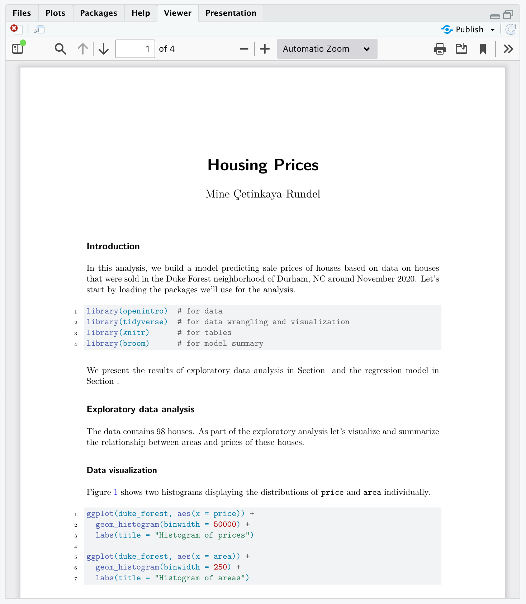
An incredibly exciting format option that we won’t go into too much detail in this tutorial is revealjs. Yes, you can make presentations with Quarto as well! In fact, Quarto supports supports a variety of formats for creating presentations, including revealjs for HTML slides, pptx for PowerPoint, and beamer for LaTeX/PDF. The Presentations article gives a thorough walk through of creating slide decks with Quarto.
Multiple Formats
Some documents you create will have only a single output format, however in many cases it will be desirable to support multiple formats. Let’s add the html and docx formats to our document and modify some options specific to each format.
---
title: "Housing Prices"
author: "Mine Çetinkaya-Rundel"
highlight-style: pygments
format:
html:
code-fold: true
html-math-method: katex
pdf:
geometry:
- top=30mm
- left=30mm
docx: default
---There’s a lot to take in here! Let’s break it down a bit. The first two lines are generic document metadata that aren’t related to output formats at all.
---
title: "Housing Prices"
author: "Mine Çetinkaya-Rundel"
---The next line is a document format option that applies to all formats, which is why it is specified at the root level.
---
highlight-style: pygments
---Next, we have the format option, where we provide format-specific options.
---
format:
html:
code-fold: true
html-math-method: katex
pdf:
geometry:
- top=30mm
- left=30mm
docx: default
---The html and pdf formats each provide an option or two. For example, for the HTML output we want the user to have control over whether to show or hide the code (code-fold: true) and use katex for math text. For PDF we define some margins. The docx format is a bit different—it specifies docx: default. This indicates that we just want to use all of the default options for the format.
Rendering
Clicking the  Render button (or using the keyboard shortcut ⇧⌘K) in RStudio will render the document to the first format listed in the YAML.
Render button (or using the keyboard shortcut ⇧⌘K) in RStudio will render the document to the first format listed in the YAML.
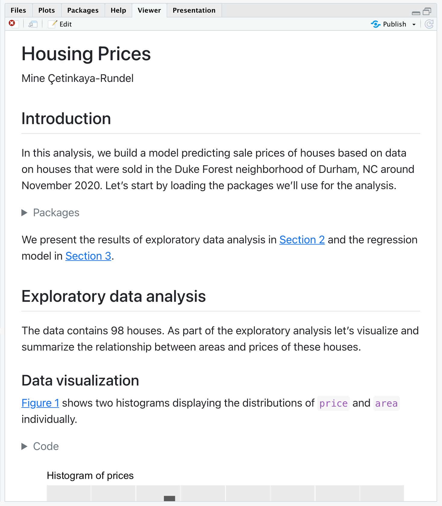
If you would like to render to all formats, you can do so with the quarto package, which provides an R interface to the Quarto CLI. For example, to render the current document, use quarto::quarto_render(). You can also specify the name of the document you want to render as well as the output format(s).
quarto::quarto_render(
"authoring.qmd",
output_format = c("pdf", "html", "docx")
)As a result, you will see three new files appear in your Files pane:
authoring.docxauthoring.htmlauthoring.pdf
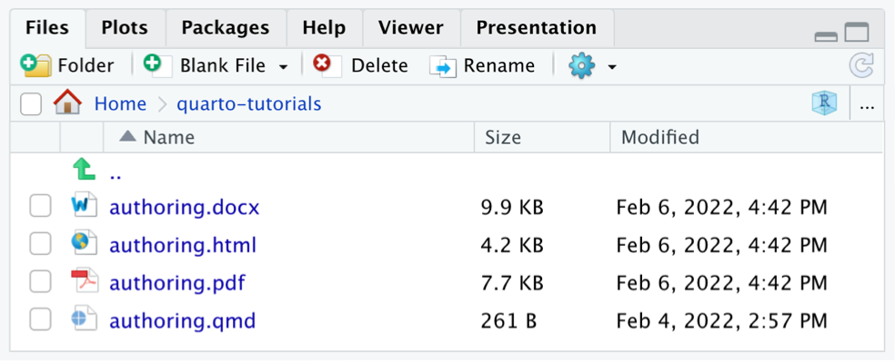
Sections
You can use a table of contents and/or section numbering to make it easier for readers to navigate your document. Do this by adding the toc and/or number-sections options to document options. Note that these options are typically specified at the root level because they are shared across all formats.
---
title: "Housing Prices"
author: "Mine Çetinkaya-Rundel"
toc: true
number-sections: true
highlight-style: pygments
format:
html:
code-fold: true
html-math-method: katex
pdf:
geometry:
- top=30mm
- left=30mm
docx: default
---Here’s what this document looks like when rendered to HTML.
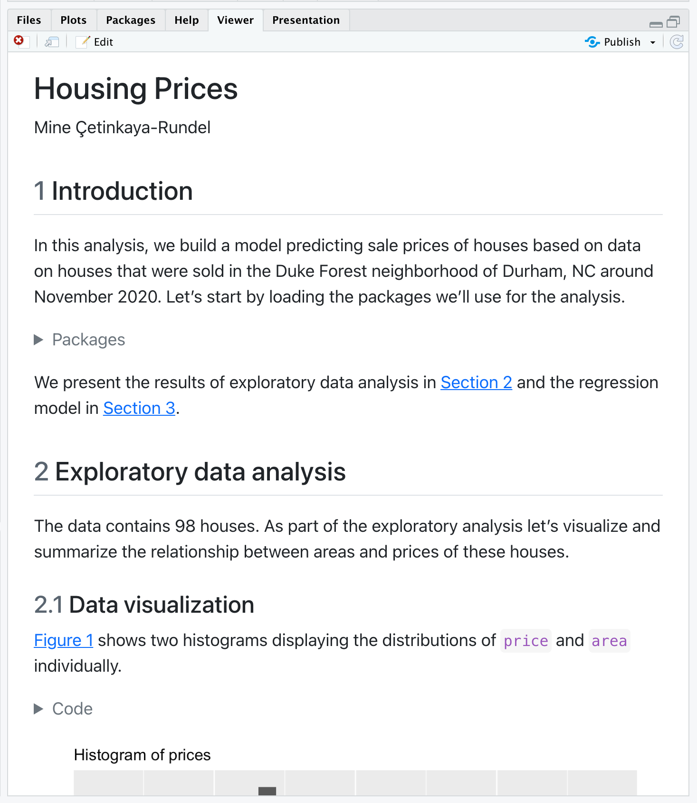
There are lots of options available for controlling how the table of contents and section numbering behave. See the output format documentation (e.g. HTML, PDF, MS Word) for additional details.
Equations
If you are using the visual editor mode, you can add LaTeX equations to Quarto documents in RStudio using the Insert Anything tool. You can access it with / at the beginning of an empty block or Cmd+/ anywhere else.
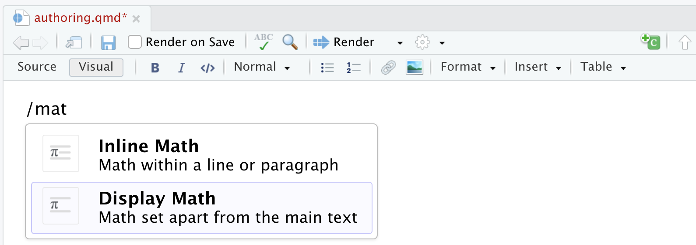
Display equations (in a new line) are delimited with $$…$$ while inline equations are delimited with $…$. Add the following as display math in the document.
price = \hat{\beta}_0 + \hat{\beta}_1 \times area + \epsilonRStudio displays a rendered version of the tutorial as you type it in the editor. See the documentation on markdown equations for additional details.
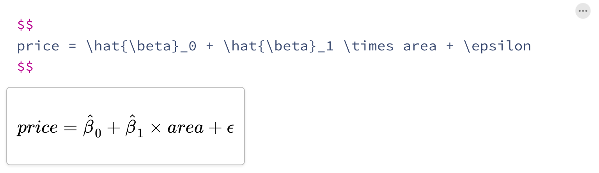
Citations
The Insert Anything tool can also be used to insert citations to your document.
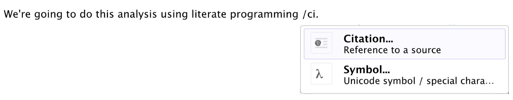
In the next window you can insert a citation via from a variety of sources including your document bibliography, Zotero personal or group libraries, DOI (Document Object Identifier) references, and searches of Crossref, DataCite, or PubMed. You can find out more about citations with the visual editor here.
Select From DOI on the left and copy-and-paste the DOI 10.1093/comjnl/27.2.97 in the search bar and hit Search. Then, select the found reference, and Insert it into your document.
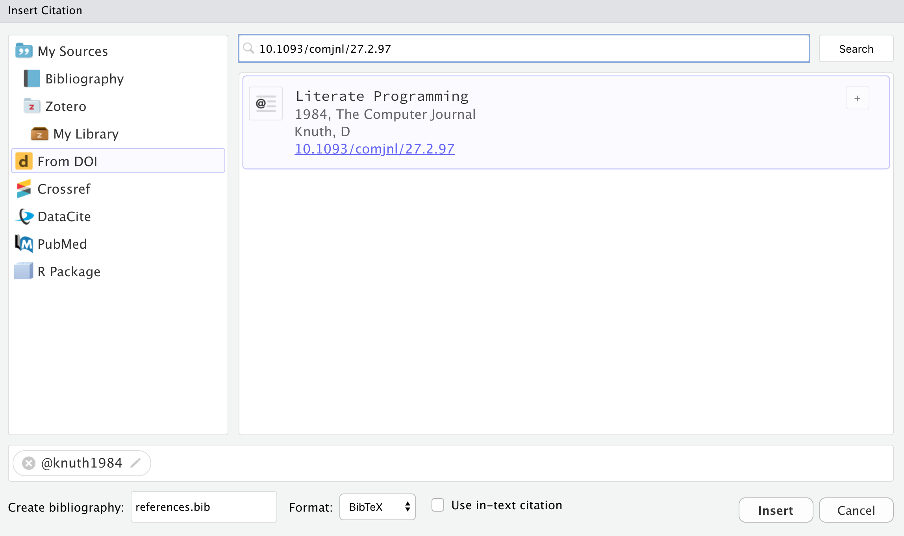
If this is the first citation you are adding to your document, RStudio will automatically create a bibliography file for you. This file is called references.bib by default and RStudio will also add bibliography: references.bib to your document’s YAML metadata.
Note that items within the bibliography are cited using the @citeid syntax. Add the following text to your document.
We're going to do this analysis using literate programming [@knuth1984].References will be included at the end of the document, so we include a ## References heading at the bottom of the notebook. You might also add .unnumbered class to this section by clicking on the three dots (…) to edit its attributes.
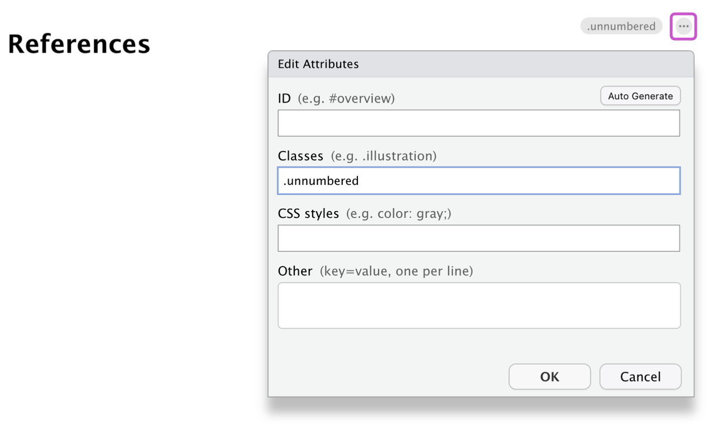
Here is what this document looks like when rendered (with middle sections removed to highlight the relevant parts.
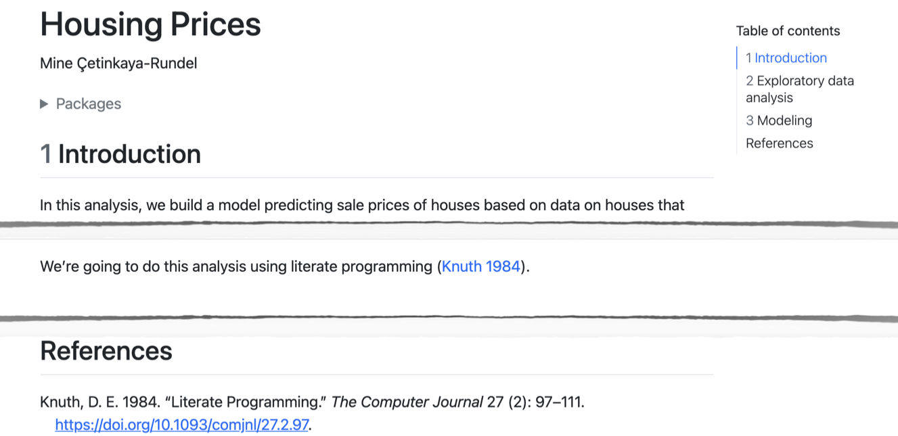
The @ citation syntax is very flexible and includes support for prefixes, suffixes, locators, and in-text citations. See the documentation on Citations and Footnotes to learn more.
Cross References
Cross-references make it easier for readers to navigate your document by providing numbered references and hyperlinks to figures, tables, equations, and sections. Cross-reference-able entities generally require a label (unique identifier) and a caption.
For example, to add a label to the equation inserted earlier, click on the three dots to edit its attributes and use the suggested format (starting with #eq-) to label the equation.
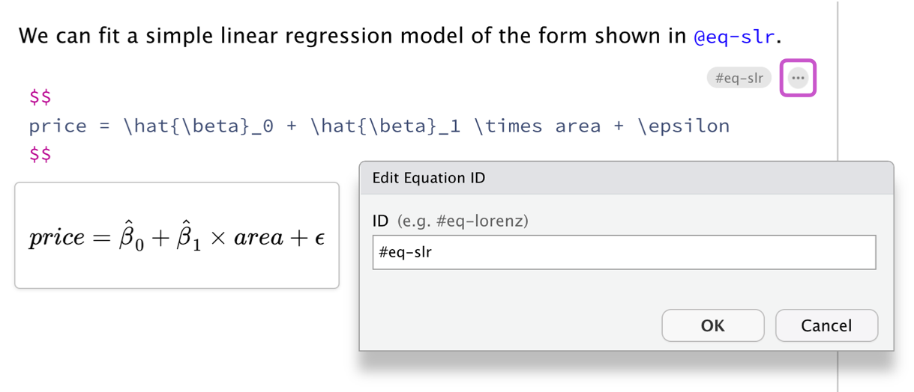
Then, add a cross reference using the Insert Anything tool in the visual editor. You might add a sentence like "We can fit a simple linear regression model of the form shown in" to contextualize the cross reference and then add the reference to the end of that sentence.
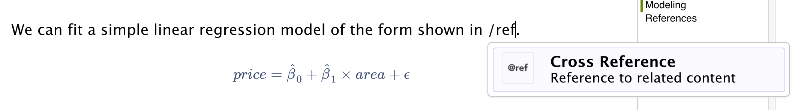
In the Insert Cross Reference menu, navigate to the desired cross reference entity on the left, and select the equation labeled earlier.
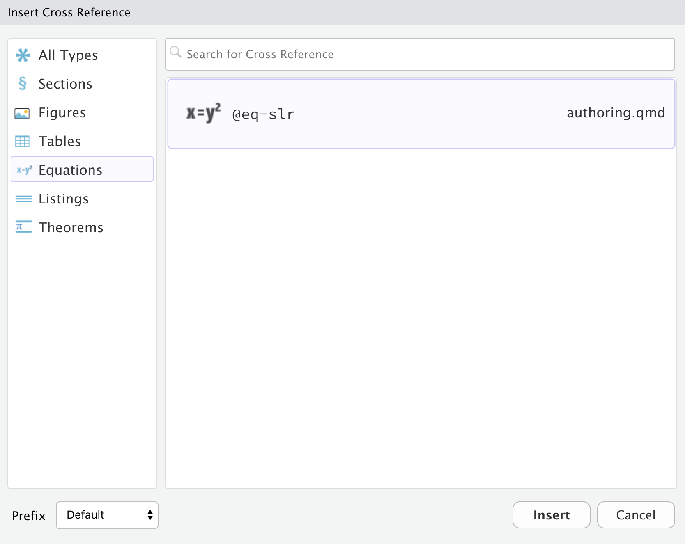
Alternatively, start typing the label of the equation to be referenced in the visual editor, and the autofill tool will bring up the cross references to choose from.
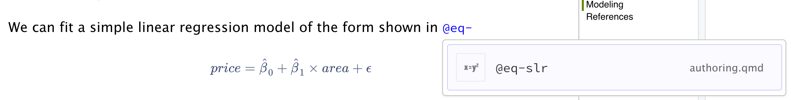
Below we illustrate cross-referencing various types of entities using fragments from the document you’ve been working with.
We present the results of exploratory data analysis in @sec-eda and the regression model in @sec-model.
@fig-scatterplot displays the relationship between these two variables in a scatterplot.
@tbl-stats displays basic summary statistics for these two variables.
We can fit a simple linear regression model of the form shown in @eq-slr.This examples include cross-referenced sections, figures, and equations. The table below summarizes how we express each of these.
| Entity | Reference | Label / Caption |
|---|---|---|
| Section | @sec-eda |
ID added to heading: |
| Figure | @fig-scatterplot |
YAML options in code cell: |
| Table | @tbl-stats |
YAML options in code cell: |
| Equation | @eq-slr |
At end of display equation: |
See the article on Cross References to learn more, including how to customize caption and reference text (e.g. use “Fig.” rather than “Figure”).
Callouts
Callouts are an excellent way to draw extra attention to certain concepts, or to more clearly indicate that certain content is supplemental or applicable to only some scenarios.
Callouts are markdown divs that have special callout attributes. We can insert a callout using the Insert Anything tool.
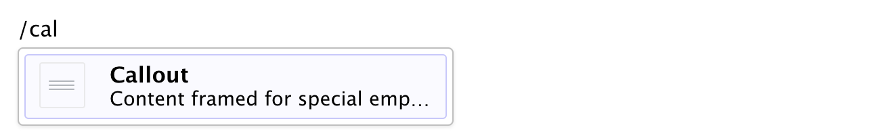
In the subsequent dialogue you can select one of five types of callout (note, tip, important, caution, or warning), customize its appearance (default, simple, or minimal), and decide whether you want to show the icon.

Then, try inserting the following text in the callout box.
This is a pretty incomplete analysis, but hopefully the document provides a good overview of some of the authoring features of Quarto!Here is what a callout looks like in the visual editor.

And here is the rendered callout in the output document.

You can learn more about the different types of callouts and options for their appearance in the Callouts documentation.
Article Layout
The body of Quarto articles have a default width of approximately 700 pixels. This width is chosen to optimize readability. This normally leaves some available space in the document margins and there are a few ways you can take advantage of this space.
We can use the column: page-right cell option to indicate we would like our figure to occupy the full width of the screen, with some inset. Go ahead and add this chunk option to the chunk labeled fig-histogram.
#| label: fig-histogram
#| fig-cap: "Histograms of individual variables"
#| fig-subcap:
#| - "Histogram of `price`s"
#| - "Histogram of `area`s"
#| layout-ncol: 2
#| column: page-rightHere is what the relevant section of the document looks like when rendered.

You can locate citations, footnotes, and asides in the margin. You can also define custom column spans for figures, tables, or other content. See the documentation on Article Layout for additional details.
Publishing
Once your document is rendered to HTML, you can publish to RPubs (a free service from RStudio for sharing documents on the web) simply by clicking the  Publish button on the editor toolbar or preview window. Alternatively, you can use the
Publish button on the editor toolbar or preview window. Alternatively, you can use the quarto::quarto_publish_doc() function.
quarto::quarto_publish_doc(
"authoring.qmd",
server = "rpubs.com"
)Other possible publishing options include RStudio Connect and ShinyApps as well as GitHub Pages, Netlify, etc. The Publishing HTML article gives a much more detailed overview of your publishing options.
If you followed along step-by-step with this tutorial, you should now have a Quarto document that implements everything we covered. Otherwise, you can download a completed version of computations.qmd below.
Learning More
You’ve now learned the basics of using Quarto! Once you feel comfortable creating and customizing documents here are a few more things to explore:
Presentations — Author PowerPoint, Beamer, and Revealjs presentations using the same syntax you’ve learned for creating documents.
Websites — Publish collections of documents as a website. Websites support multiple forms of navigation and full-text search.
Blogs — Create a blog with an about page, flexible post listings, categories, RSS feeds, and over twenty themes.
Books — Create books and manuscripts in print (PDF, MS Word) and online (HTML, ePub) formats.
Interactivity — Include interactive components to help readers explore the concepts and data you are presenting more deeply.